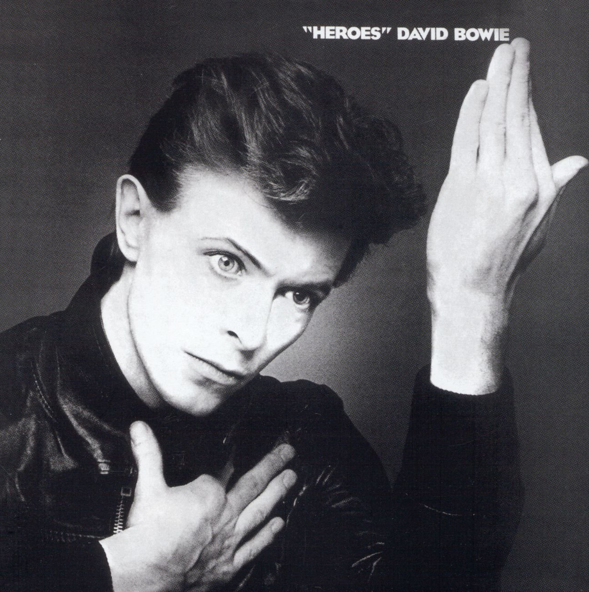

David Bowie Albums
| Album Cover | Year released | Most popular track | Genre | Singles on album | Tracklist |
|---|---|---|---|---|---|
The Rise and Fall of |
1972 | Starman | Glam rock/Proto punk | "Starman/Suffragette City" "Rock 'n' Roll Suicide" |
"Five Years" "Soul Love" "Moonage Daydream" "Starman" "It ain't Easy" "Lady Stardust" "Star" "Hang on to yourself" "Ziggy Stardust" "Suffragette City" "Rock 'n' Roll Suicide" |
Station to Station
|
1976 | Golden Years | Funk rock | "Golden Years" "TVC15" |
"Station to Station" "Golden Years" "Word on a Wing" "TVC15" "Stay" "Wild is the Wind" |
Low
|
1977 | Sound and Vision | Ambient/Experimental rock | "Sound and Vision" "Be my Wife/Speed of life" "Breaking Glass/Art decade" |
"Speed of Life" "Breaking Glass" "What in the World" "Sound and Vision" "Always Crashing in the Same Car" "Be my Wife" "A New Career in a New Town" "Warszawa" "Art Decade" "Weeping Wall" "Subterraneans" |
Heroes |
1977 | Heroes | Experimental rock/Elemctronic | "Heroes/V-2 Schneider" "Beauty and the Beast/Sense of Doubt" |
"Beauty and the Beast" "Joe the Lion" "Heroes" "Sons of the Silent Age" "Blackout" "V-2 Schneider" "Sense of Doubt" "Moss Garden" "Neukoln" "The Secret Life of Arabia" |
Tonight
|
1984 | Blue Jean | Pop/Soul | "Blue Jean" "Tonight" "Loving the Alien" |
"Loving the Alien" "Don't look down" "God only knows" "Tonight" "Neighborhood Threat" "Blue Jean" "Tumble and Twirl" "I keep forgettin'" "Dancing with the Big Boys" |
Earthling |
1997 | I'm Afraid of Americans | Industrial rock/Drum and Bass | "Telling lies" "Little Wonder" "Dead man walking" "Seven Years in Tibet" "I'm Afraid of Americans" |
"Little Wonder" "Looking for Satellites" "Battle for Britain(The Letter)" "Seven Years in Tibet" "Dead Man Walking" "Telling Lies" "The last Thing you Should Do" "I'm Afraid of Americans" "Law(Earthlings on Fire)" |
Heathen |
2002 | Everyone says 'Hi' | Art rock/Art pop | "Slow Burn" "Everyone says 'Hi'" "I've been waiting for you" |
"Sunday" "Cactus" "Slip Away" "Slow Burn" "Afraid" "I've Been Waiting for You" "I would be your Slave" "I took a Trip on a Gemini Spaceship" "5:15 The Angels have Gone" "Everyone says 'Hi'" "A Better Future" "Heathen(The Rays)" |
The Next Day |
2010 | Where are we now? | Rock | "Where are we now?" "The stars (Are out Tonight)" "The Next Day" "Valentine's Day" "Love is Lost" |
"The Next Day" "Dirty Boys" "The Stars(Are Out Tonight)" "Love is Lost" "Where are we Now?" "Valentine's Day" "If you can see me" "I'd rather be High" "Boss of Me" "Dancing out in Space" "How does the Grass Grow?" "(You Will)Set the World on Fire" "You Feel so Lonely You Could Die" "Heat" |